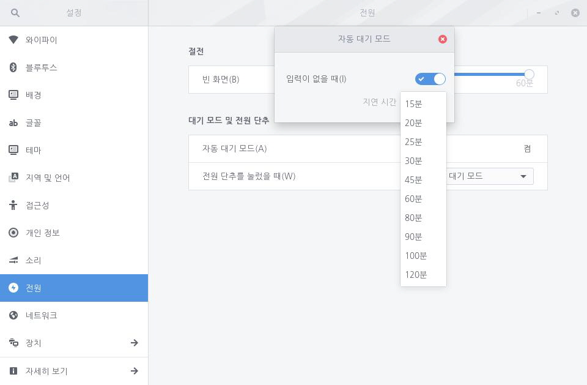
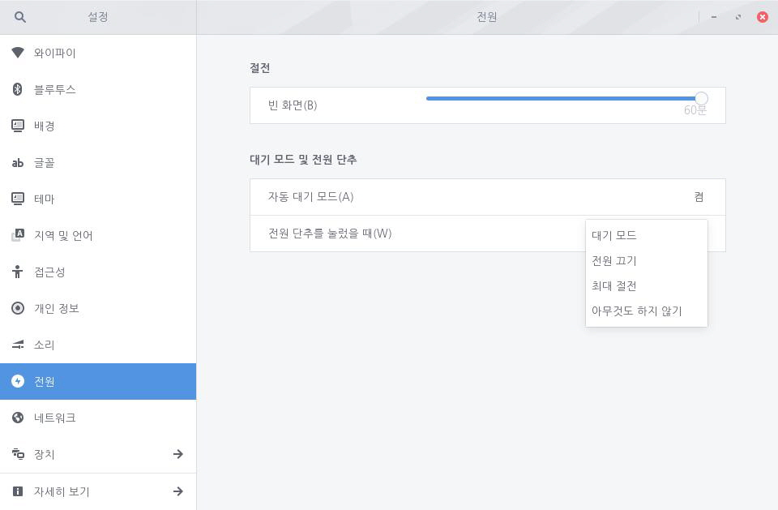

전원
전원
사용자 컴퓨터의 절전 및 대기 모드를 설정합니다.
절전
사용자 입력이 없을 때 화면이 절전 모드로 전환되는 시간을 설정하여 전원 낭비를 막을 수 있습니다. 슬라이더의 흰 원을 좌우로 옮겨 시간을 설정할 수 있으며, 최소 1분부터 최대 60분까지 설정할 수 있습니다. 흰 원을 왼쪽 맨 끝으로 옮기면 절전 모드가 해제됩니다.

대기 모드 및 전원 단추
컴퓨터 대기 모드를 설정할 수 있습니다. [자동 대기 모드]를 클릭하는 경우 컴퓨터 대기 모드를 켜거나 끌 수 있으며 대기 모드로 전환되는 시간을 설정할 수 있습니다. 설정 가능한 시간은 최소 15분부터 최대 120분입니다. 자동 대기 모드에 들어가기 3분 전에 우측 상단에 자동 대기 모드 메시지가 표시됩니다. 절전 모드로 전환된 후 컴퓨터를 사용하려면 사용자 인증이 필요합니다.

사용자가 컴퓨터 전원 단추를 눌렀을 때 [대기 모드], [전원 끄기], [최대 절전], [아무 것도 안 함] 중 하나의 동작을 수행하도록 설정할 수 있습니다. [아무 것도 안 함]을 선택한 경우 컴퓨터의 전원 단추를 눌러도 아무런 변화가 없습니다.
